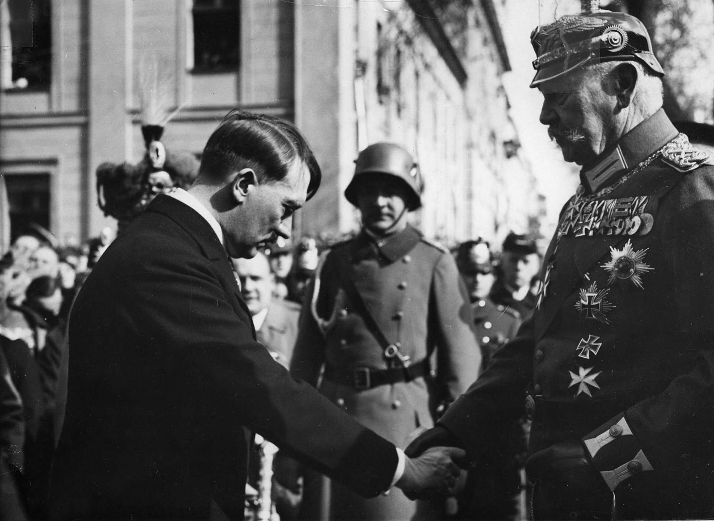
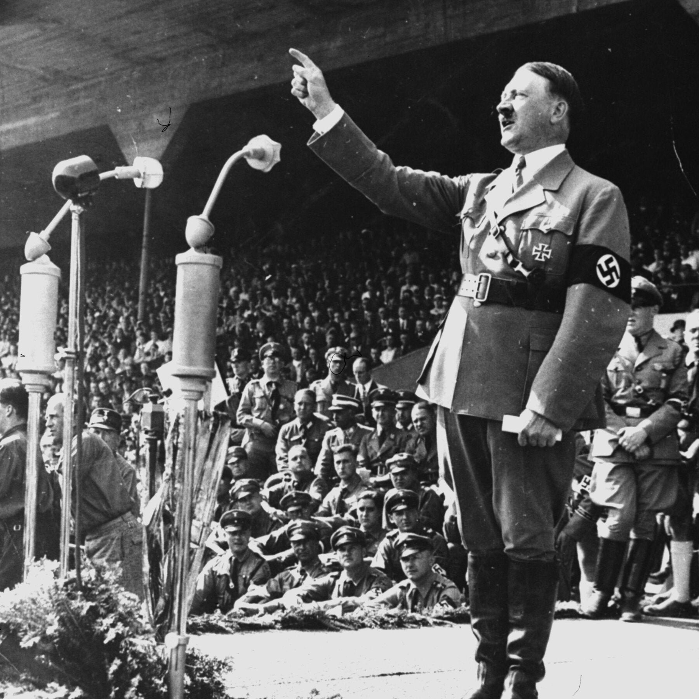
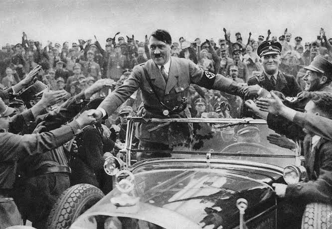

The Rise of the Nazis to Power in 1933
Adolf Hitler's appointment as Chancellor of Germany on January 30, 1933, was not a sudden coup but the outcome of prolonged economic crisis, political polarization, paramilitary intimidation, and miscalculation by conservative leaders during the final years of the Weimar Republic.
Weimar Instability and Economic Shock

When the German Empire collapsed in late 1918 amid military defeat, exhaustion, and domestic unrest, the Weimar Republic began life under severe pressure. Even before its constitution was settled in 1919, the new parliamentary democracy faced deep hostility from extremists on both the far right and the far left, alongside bitter arguments over the Treaty of Versailles, war guilt, and reparation payments.
Early years brought severe shocks that tested whether democratic institutions could hold. In 1923, hyperinflation destroyed the value of savings and wages for millions of Germans, turning everyday life into a scramble for cash or barter before currency reform and foreign lending—especially American loans under the Dawes Plan—helped stabilize the economy between 1924 and 1929.
That mid-1920s recovery remained fragile because much of the capital flowing into Germany was short-term and easily withdrawn. When the Wall Street stock market crashed in October 1929 and global credit contracted, banks came under strain, exports fell, and industrial production dropped sharply.
Unemployment climbed from roughly one and a half million in late 1929 to millions out of work over the next few years. For ordinary families facing wage reductions, lost savings, and long-term joblessness, the shifting coalition cabinets of the Weimar system looked slow, quarrelsome, and unable to deliver relief.
Radical movements fed directly on that despair. Communists gained industrial and urban support by arguing that capitalism and parliamentary compromise had failed, while the National Socialist German Workers' Party (NSDAP) expanded far beyond its earlier base to draw in farmers, shopkeepers, clerks, students, and nationalist voters who felt abandoned by traditional parties.
Economic strain also deepened social resentment across regions and generations. Younger voters who had not known pre-1914 stability, rural producers squeezed by falling agricultural prices, and small proprietors facing ruin increasingly looked for forceful solutions rather than gradual parliamentary negotiation.
Regional and religious differences also shaped how political stress was felt across Germany. Protestant rural and small-town districts often shifted more rapidly toward nationalist and Nazi appeals than some industrial or Catholic areas where established unions, church networks, or rival parties retained stronger social ties, even as economic hardship strained every community.
Propaganda, Street Politics, and Electoral Breakthrough

Throughout the early 1930s, the Nazi Party combined modern mass persuasion with aggressive street presence. Under Joseph Goebbels's propaganda direction, rallies, posters, newspapers, torchlight parades, and radio messaging projected motion, unity, and decisiveness at a time when mainstream parties seemed divided and defensive.
At the same time, the Sturmabteilung (SA)—the brown-shirted paramilitary organization—staged marches, clashes, and disruptive demonstrations in towns and cities. While supporters viewed uniform displays and street dominance as proof of strength and order, political rivals, union organizers, and minority communities faced constant intimidation.
At the ballot box, the Nazis broke out of the political margins in September 1930, surging to become the second-largest party in the Reichstag. That breakthrough accelerated a shift away from normal parliamentary government toward rule by presidential emergency decree under Article 48 of the Weimar constitution.
By 1932, Germany was locked in deep political gridlock. Hitler challenged incumbent President Paul von Hindenburg in the spring presidential election and won over thirteen million votes in the runoff, while two Reichstag elections—in July and November 1932—left the Nazis as the largest party without an outright majority.
Even though the Nazis' vote share dipped slightly in November 1932—leading some observers to wonder if their momentum had peaked—the Weimar cabinet system was already hollowing out. Key decisions were increasingly made by a small circle of unelected advisers, generals, and conservative politicians rather than through a functioning parliament.
Meanwhile, democratic coalitions struggled to form durable majorities as moderate voters drifted away from centrist parties. Once parliamentary compromise broke down repeatedly, emergency rule became routine and accustomed public life to executive decrees.
Modern media amplified these political shifts at a scale unseen in earlier German elections. Broadcast speeches, illustrated newspapers, mass rallies, and coordinated campaign schedules allowed the NSDAP to reach millions of citizens repeatedly, reinforcing a sense of unstoppable momentum even when election results fluctuated or fell short of an outright majority.
Conservative Miscalculation and Consolidation of Dictatorship

Hitler entered the chancellorship on January 30, 1933, not because a majority of Germans voted for a dictatorship, but because conservative figures around Hindenburg—including Franz von Papen and Alfred Hugenberg—believed they could use Hitler's mass appeal while keeping him boxed in inside a right-wing coalition cabinet.
In that initial cabinet, Nazis held only three of eleven ministerial posts, with Hitler as Chancellor and Wilhelm Frick at the Interior Ministry. Yet traditional conservatives misjudged how quickly control of policing, state administration, and emergency powers could be turned into permanent one-party rule.
Weeks into the new government, the burning of the Reichstag building on the night of February 27, 1933, gave Hitler and his allies a powerful political lever. Claiming a communist plot, they persuaded Hindenburg to sign the Reichstag Fire Decree the very next day, suspending core constitutional protections including freedom of speech, freedom of the press, and freedom of assembly.
Armed with emergency decree powers and SA and SS backing, authorities arrested thousands of Communists, Social Democrats, and other opponents ahead of the March 5 Reichstag election. Even under heavy state pressure and intimidation, the Nazi Party won 43.9 percent of the vote rather than a standalone majority, requiring nationalist support to govern.
Later in March 1933, the passage of the Enabling Act gave Hitler's cabinet authority to enact laws without the Reichstag or presidential signature, achieved through intimidation, the arrest or absence of opposition deputies, and compromises with center and conservative members.
Within months, rival parties were banned or dissolved, trade unions were absorbed, and federal states were brought under central control. What began through political maneuvering and emergency decrees rapidly consolidated into a totalitarian dictatorship that reshaped Germany and set Europe on a path toward war.
Once emergency decrees and the Enabling Act removed normal constitutional checks, state power and party authority merged rapidly. Police forces, civil courts, local administrations, and public media were aligned with the regime, silencing organized opposition and turning a fragile republic into an authoritarian state prepared to rearm and expand abroad.